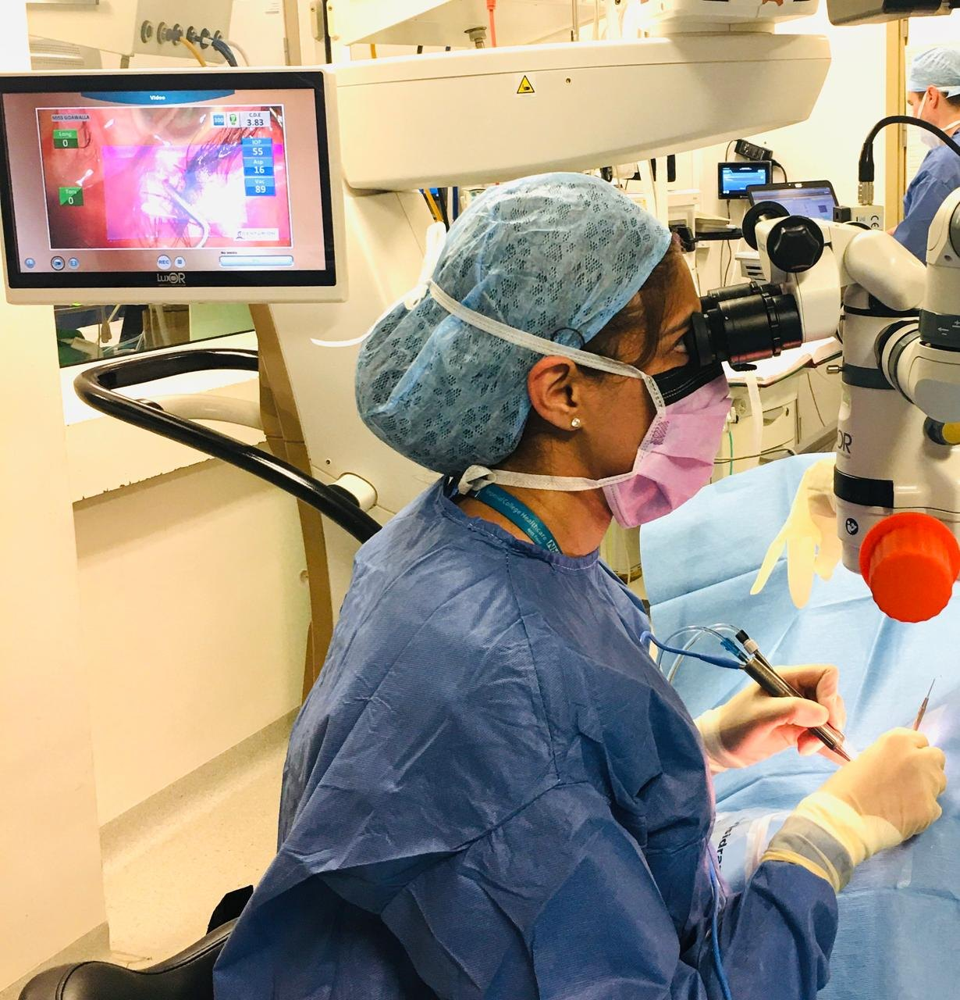

Home/Treatments/Cataract surgery
Cataract and lenses
Cloudy, or clear?
Cataract surgery in London with Dr Amynah Goawalla
A cataract is the eye’s natural lens turning cloudy. Dr Goawalla offers standard and complex cataract surgery, with the lens chosen around your eyes and the distances that matter to you.

Signs it may be a cataract
Cataracts usually develop slowly and often affect both eyes. Common signs include:
- Blurred vision, and difficulty seeing at night
- Difficulty reading and watching television
- Discomfort or sensitivity to light and glare
- Haloes, or glowing rings, around lights
- Faded colours, particularly blue
- Needing new glasses more often than usual
When surgery makes sense
Cataracts do not usually need treatment straight away. They tend to worsen over time, and surgery is considered when you want to improve your sight. The decision rests on how the cataract affects your daily life, and whether one or both eyes are affected.
The operation
Surgery replaces the cloudy lens with a clear artificial one. It is done under local anaesthetic, so you are awake but should not feel pain, and most people go home the same day.
If both eyes need surgery, they can be treated on the same day if this is appropriate and safe, and if you wish. Having both eyes done together means one recovery and one period of time off work, and, with premium lens implants, one period of adjusting to the new lenses, which can take a few days or, for some people, a few months.
Before surgery the eye is examined and measured to plan treatment, and you choose the type of lens with Dr Goawalla.
Recovery
For most people surgery improves vision, recovery is quick and serious complications are rare. Follow your surgical team’s instructions, including prescribed drops and follow-up. Recovery varies from person to person.
In her own words
Dr Goawalla answers your questions
Short videos, in plain English. Captions are available on each video.
Risks
Surgery carries risks, including infection, inflammation, retinal problems and changes in vision; serious complications can occur. Glasses may still be needed long term.
Questions patients ask
Will I be awake?
Yes. Cataract surgery is done under local anaesthetic, so you are awake but should not feel pain.
Can both eyes be done on the same day?
Yes, if it is appropriate and safe, and if you wish.
Can I still drive with a cataract?
Some people can if their vision meets the legal standard. You must tell the DVLA if your eyesight does not meet the minimum standards.
Can I choose a lens that reduces my need for glasses?
You can discuss lens options at your assessment. Suitability depends on your eye health and visual priorities, and no lens can guarantee freedom from glasses.
General information only. A consultation with Dr Goawalla is needed to assess your eyes and discuss a plan.
Related
Book a consultation
with Dr Goawalla.
Call or email the secretary for the clinic you choose. Email is often the quickest way, at any time of day. The secretary can also explain fees and what your insurer needs.
You can also book directly with The London Clinic on 020 7935 4444 and The Cromwell Hospital on 020 7460 5700.